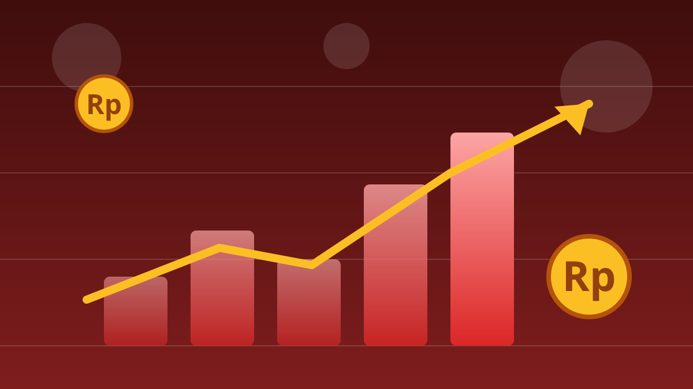

1 / 6

💰 EKONOMI
Bursa Dibuka Langsung Merah Menyala
IHSG ambles 8,01% begitu perdagangan dibuka Jumat pagi — sampai BEI menekan tombol jeda. Geser buat spill lengkapnya →
2 / 6
📉
Anjlok ke 5.393,92, Langsung Dihentikan
Pada pembukaan Jumat, 16 Oktober 2026, IHSG merosot 8,01% ke level 5.393,92. Sehari sebelumnya, Kamis 15 Oktober, indeks sudah ditutup melemah 1,33% ke 5.863,78.
Karena penurunannya melewati ambang 8%, BEI memberlakukan trading halt — penghentian sementara perdagangan — selama 30 menit, dari pukul 08.58 sampai 09.28 WIB.
3 / 6
🌍
Pemicunya: MSCI Buka Konsultasi Reklasifikasi
Tekanan muncul setelah MSCI, penyedia indeks global, mengumumkan pada 15 Oktober bahwa mereka membuka konsultasi soal kemungkinan mengubah klasifikasi pasar saham Indonesia dari Emerging Market menjadi Standalone Market.
Keputusan finalnya ditargetkan paling lambat 30 Juni 2027, dan konsultasinya berjalan sampai 30 April 2027. Jadi ini masih proses, bukan keputusan akhir.
4 / 6
🏦
Saham Big Cap Kena ARB Berjamaah
Di awal perdagangan, banyak saham besar menyentuh auto rejection bawah alias ARB. BBRI turun 14,84% ke Rp2.640, BMRI turun 14,82% ke Rp3.390, dan BREN turun 14,91%.
MSCI sendiri menyoroti transparansi struktur kepemilikan saham, dugaan praktik perdagangan terkoordinasi, dan efektivitas penegakan aturan di pasar Indonesia.
5 / 6
⚖️
Aturan Halt & Respons BEI
Sesuai aturan BEI, penurunan IHSG lebih dari 8% memicu trading halt 30 menit; kalau lanjut turun lebih dari 15%, halt kedua diberlakukan; dan di atas 20%, perdagangan bisa disuspend.
BEI menyatakan akan meminta klarifikasi kepada MSCI. Direktur Utama BEI Jeffrey Hendrik menegaskan otoritas sudah melakukan berbagai langkah konkret untuk meningkatkan transparansi dan integritas pasar modal Indonesia.
6 / 6
🤔
Efeknya ke lo apa?
Punya reksa dana, saham, atau nabung buat dana darurat di instrumen pasar modal? Nilai portofolio bisa ikut goyang dalam beberapa hari ke depan. Yang paling aman: jangan panik jual cuma karena timeline rame.
Ikuti pengumuman resmi BEI, OJK, dan MSCI — dan ingat, ini bukan ajakan jual atau beli. Keputusan investasi tetap di tangan lo.